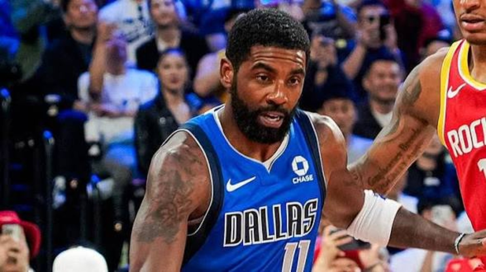
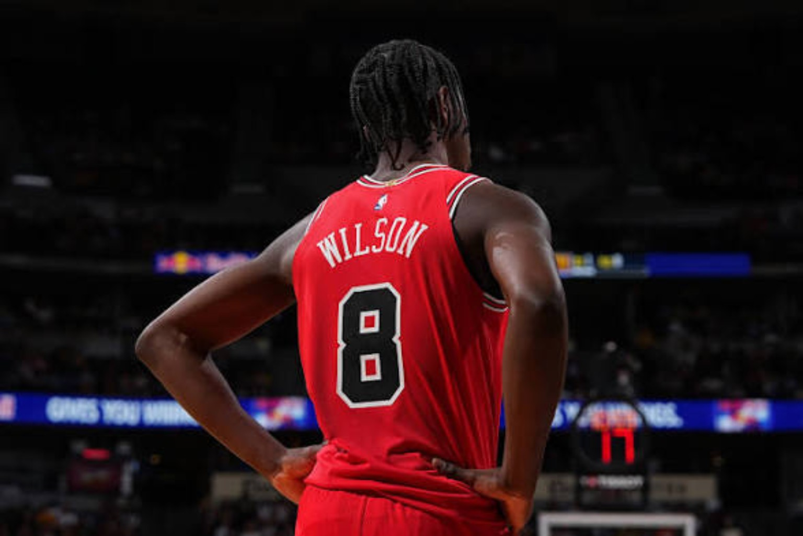

Four games, four final scores. Kyrie Irving is back on an NBA floor. Jokić runs the show in Denver, Harden shows his touch in Cleveland, Charlotte finds its defense, and Caleb Wilson keeps learning in public.
4 GAMES · ALL FINALOCTOBER 11, 20264DK ORIGINAL NIGHTCAP
PLAYER OF THE NIGHTNikola Jokić · 22 / 11 / 10
ROOKIE SPOTLIGHTCaleb Wilson · 17 / 4 / 5
GAME OF THE NIGHTNuggets 133, Bulls 128
COMEBACK STORYKyrie Irving · 17 PTS
THE 4DK READ
IT'S ABOUT THE IMPACT, NOT THE EXHIBITION RECORD.
Four preseason games, four completely different kinds of evidence. Dallas closed its China trip by getting Kyrie Irving back on the floor and splitting the series with Houston. Cleveland got a reminder of how much a composed, efficient James Harden can change an offense. Charlotte turned its matchup with Milwaukee into a comfortable defensive win. And Denver and Chicago gave us the night's strongest game: 261 combined points, an early Bulls push, and another Nikola Jokić triple-double before the regular season has even begun.
Our job is not to confuse October exhibitions with playoff conclusions. Starters have minutes limits, coaches are experimenting, and some major names aren't available. But the details still matter: who can create a quality shot when a possession breaks down, whose supporting cast fits, whether a rookie sees the whole floor, and what happens when the game gets physical. Tonight had answers to all four questions.
We are also watching the through-lines. Caleb Wilson's three-point eruption against Memphis was the headline two nights ago; tonight the jumper cooled, but his floor game stayed alive. That is the story of a young player's adjustment. Meanwhile, Jokić barely needed 26 minutes to remind us why Denver's offense keeps its own rhythm when he's involved. Here's what we saw across all four finals, and what carries forward.
TONIGHT'S HONORS
THE NIGHTCAP AWARDS.
One slate, three distinctions. Our picks reflect what happened on October 11, not a prediction of the standings.
01 · PLAYER OF THE NIGHT
NIKOLA JOKIĆ.
22 PTS · 11 REB · 10 AST · 26 MIN
A full triple-double in three quarters of work, plus the calm presence that helped Denver erase a nine-point halftime deficit. We know who Jokić is, but even a preseason example of his control deserves to be documented.
02 · ROOKIE SPOTLIGHT
CALEB WILSON.
17 PTS · 4 REB · 5 AST
The threes didn’t drop like they did against Memphis. He still competed, made reads, and finished with five assists against a loaded Denver frontcourt. Development is rarely a straight line.
03 · GAME OF THE NIGHT
BULLS VS. NUGGETS.
DENVER 133 · CHICAGO 128
Chicago scored 41 in the second quarter and led by nine at halftime. Denver answered with a 40-point third. The rookie was part of the story, but so were Jokić, Aaron Gordon and Leonard Miller.
THE ENTIRE OCTOBER 11 SLATE
FOUR GAMES. FOUR DIFFERENT LESSONS.
Full finals, the players who moved the conversation, and a 4DK basketball read on each matchup.
GAME 01 / 04FINAL
DAL132
—
HOU115

4DK NIGHTCAP · DALLAS–HOUSTON
A RETURN BIGGER THAN A PRESEASON RESULT
KYRIE IRVING · 17 PTS IN 22 MIN | COOPER FLAGG · 14 PTS · 7 AST | MARCUS SMART · 20 PTS
The second meeting in Macao flipped the result from the first. Dallas won 132–115, turning a close opening half into separation with 37 points in both the third and fourth quarters. Houston entered the game with a chance to sweep the China set; instead, the Mavericks earned a split and an entirely different feeling on the way home. The score is significant, but the most important Dallas storyline was the player whose name wasn't on the first game's stat sheet: Kyrie Irving.
Irving returned after a lengthy absence following his knee injury, finishing with 17 points in roughly 22 minutes. That isn't a workload we should overinterpret, and it isn't proof that everything is exactly where it was before the injury. It is a welcome first step in a full-speed NBA setting. His changes of pace and scoring touch give Dallas something that roster construction alone cannot manufacture: a guard who can turn a complicated half-court possession into a clean look. The biggest question for Dallas is how those possessions complement the development of its younger creators instead of slowing them down.
Cooper Flagg finished with 14 points and seven assists, the playmaking part of the line more instructive than any single missed jumper. This roster is asking him to be a scorer, passer and connective piece; letting Kyrie handle the late-clock rescue possessions can relieve some pressure while still giving Flagg meaningful decisions to make. The Mavericks also won the turnover battle in a game Houston gave away too frequently, and their bench contributed heavily to the scoring margin. This looked less like one star stealing an exhibition and more like Dallas beginning to understand how its pieces can share work.
For Houston, Marcus Smart delivered 20 points in his debut, while Reed Sheppard scored 17. With several key contributors unavailable, there were real opportunities for guards to show what they can provide when the ball moves through them. The Rockets should be less concerned about losing an exhibition than about how Dallas found space, scored in transition and made their mistakes costly. An offense with big ambitions still needs possession discipline. The same two teams get a regular-season rematch on October 21; the stakes and the available lineups will be different then.
WHAT MATTERS NEXT
For Dallas, the win is secondary to the sight of Irving back on the court and the possibilities it creates beside Flagg. For Houston, protecting the ball and finding cohesion when the primary scorers return are bigger tests than this 17-point exhibition loss.
Cleveland's 119–105 win over Orlando had a different center of gravity. James Harden didn't merely put up 24 points; he did it on seven makes in ten field-goal attempts, adding a combination of foul pressure and three-point shooting that kept Orlando from getting comfortable. He had missed the Cavaliers' previous preseason game, and this was the first extended look at his place in the opening-unit picture. The box score suggests his rhythm is already close. The bigger story is how much easier Cleveland's offense can look when the ball is in the hands of someone who doesn't rush the read.
Harden isn't the only creator on this roster, and that's why the fit matters. Donovan Mitchell can attack without having to engineer every possession. Evan Mobley has an established playmaking and defensive profile, and he logged 14 points and seven boards tonight. Cleveland's next level is about the blend: Harden drawing the defense, Mitchell getting downhill, and Mobley receiving the ball with a real advantage rather than having to create one from a standstill. No single preseason game settles that geometry, but it showed why the coaching staff wants a healthy Harden operating within it.
Orlando entered with Paolo Banchero, Franz Wagner, Jalen Suggs and Desmond Bane among the reasons its perimeter and forward combinations command attention. But tonight the Magic didn't generate consistent enough offense, and Cleveland was cleaner on the glass after its previous preseason outing. Orlando's challenge is to make its talent function as a connected half-court unit when opponents sit on the first option. The Magic have enough individual shot creation to score through difficult matchups; the question is how often they can produce the easy shots first.
The Cavaliers came away 1–1 in preseason, but the more useful takeaway is organizational: a team aiming to compete deep into the spring cannot rely on one isolation engine or one defensive star. It needs layers. Harden's 24 is a reminder of what one of those layers can look like when he is decisive and efficient. Next time we want to see how repeatable those possessions are against physical coverages and how Cleveland manages the minutes around its best ballhandlers.
WHAT MATTERS NEXT
Harden looked comfortable and efficient in his preseason debut. The next checkpoint is whether Cleveland can sustain that creation while blending Mitchell, Mobley and the rest of its starting group.
GAME 03 / 04FINAL
MIL90
—
CHA105
CHARLOTTE GETS THE KIND OF DEFENSIVE NIGHT IT NEEDED
Charlotte's 105–90 win didn't come with the fireworks of Denver–Chicago, and that was part of its appeal. After falling behind 10–2, the Hornets worked their way back, took control before halftime and refused to let Milwaukee establish consistent offensive flow. Charlotte led 60–45 at the break, then built enough distance in the third to keep the fourth quarter from becoming an emergency. This was a much more useful identity test than simply asking who had the hottest hand.
Brandon Miller delivered 18 points and four three-pointers. He has the length and shot-making talent to be one of the players a rebuilding organization can put real responsibility on, but we're looking for the full growth curve: decision-making when the three isn't falling, how consistently he creates for others, and how often he competes on the other end. Tonight he had four assists as well. Naz Reid added 16 points, giving Charlotte another scoring skill set in the frontcourt. Those options matter because defenses can scheme against a one-source offense much more easily than they can against several players capable of making a play.
The other Charlotte contribution worth noticing came from the energy and activity around them. Moussa Diabaté grabbed 11 rebounds in a reserve-heavy, experimental setting where extra possessions can swing the whole night. Rookie and young-role-player development will have to happen beside established scorers, not in separate lanes. If Charlotte wants this kind of defensive shape to survive into the regular season, it will need its rotations and rebounding to hold up even against better execution than Milwaukee delivered here.
Tyler Herro led the Bucks with 18 points, while several other Milwaukee contributors struggled to score efficiently. One preseason loss is not a verdict on their offense, but 90 points and long empty stretches deserve scrutiny. Milwaukee's challenge is less about whether any one guard can have a scoring night and more about whether the full group can generate rhythm when the initial action gets stopped. Charlotte won by doing a better job imposing its preferred tempo and making the Bucks chase it.
WHAT MATTERS NEXT
Miller's scoring is the headline, but this is a better Charlotte story when we include the rebounding, versatile frontcourt scoring and defensive attention that made a 15-point win possible.
GAME 04 / 04FINAL
CHI128
—
DEN133
4DK NIGHTCAP · DENVER

4DK NIGHTCAP · CHICAGO
JOKIĆ TAKES OVER, BUT CALEB GIVES US SOMETHING TO WATCH
NIKOLA JOKIĆ · 22 PTS · 11 REB · 10 AST | AARON GORDON · 25 PTS | LEONARD MILLER · 26 PTS | CALEB WILSON · 17 PTS · 4 REB · 5 AST
This was the night's game, and not because either team had anything permanent to gain in the standings. Chicago scored 41 in the second quarter and took a 68–59 lead into halftime. Denver answered with a 40-point third quarter, then held on for a 133–128 win. The lead changed hands emotionally as much as mathematically: the Bulls showed how dangerous they can be in open floor, while the Nuggets demonstrated why a great passing center can settle a game when it starts getting chaotic.
Nikola Jokić produced 22 points, 11 rebounds and 10 assists in approximately 26 minutes. A preseason triple-double is almost a strange thing to celebrate for someone whose standards are already this high, but look at what it tells us. When Chicago tried to speed the game up, Jokić was able to bring Denver back toward its timing. He got teammates involved, scored when the defense left him space and finished possessions on the glass. Aaron Gordon added 25 points; when Denver gets that level of assertive scoring around its hub, defenses have to answer multiple problems at once.
Chicago's best offensive example was Leonard Miller's 26-point night off the bench. He brought efficiency, movement and another source of production for a roster seeking its identity. But our long-term attention keeps returning to Caleb Wilson. The rookie scored 17, pulled down four rebounds and handed out five assists. The jumper was not automatic tonight; after an electric performance against Memphis, his three-point shot cooled and he connected on one long ball at the halftime buzzer. That's not a reason to abandon the larger evaluation. In fact, his five assists might be more important for projecting how he can stay involved when he isn't scoring easily.
Our stance on Wilson has always been about ceiling and opportunity. He's not supposed to look finished in his first preseason. Chicago is building around a young timeline and trying to install Tiago Splitter's ideas, and the point isn't whether Wilson can put up a highlight line every night. It's whether he can read the game, play with force and grow into a player who matters to winning. Tonight he competed through the rougher shooting stretches and kept participating in the offense. That is more revealing than a shooting percentage in isolation.
The warning sign for Chicago was physical and structural. The Bulls were thin up front, and Denver attacked that size issue early. A team trying to play fast cannot give up the glass and the paint whenever the first transition push stalls. There are solutions to explore—healthier center rotations, help assignments and the choice of when Wilson should be a wing versus a small-ball big—but they are problems Chicago needs to solve before wins begin to count. Denver, meanwhile, leaves knowing the Jokić–Gordon connection is still a reliable answer to difficult stretches.
WHAT MATTERS NEXT
Jokić supplied the game's best complete performance. But Chicago's takeaways shouldn't begin and end with a five-point loss: Wilson's passing and Miller's bench scoring are legitimate building blocks, while size and interior defense remain the pressing questions.
THE BIGGER PICTURE
WHAT DOES OCTOBER ACTUALLY TELL US?
Kyrie's return, Harden's efficiency and Jokić's command share one theme: experience gives teams a way to settle possessions that would otherwise unravel. It isn't about scoring totals alone. It is about how those players process the same defensive look two or three times, anticipate help, then make the next pass or the decisive move. Dallas, Cleveland and Denver all have different roster questions, but their most important creative veterans showed us why they still shape games.
The younger players are being asked to learn a different lesson. Cooper Flagg's seven assists, Caleb Wilson's five and Liam McNeeley's five for Charlotte are examples of how passing production can keep someone useful on a night when the scoring is more ordinary. We are not claiming all three have the same role or ceiling. We're saying there's a difference between a young player who needs a made jumper to matter and one who can create value as the game changes around him.
Then there is the discipline question. Houston's turnovers helped Dallas create transition opportunities; Milwaukee let offensive possessions die; Chicago's interior defense and rebounding were tested when Denver got comfortable. Those are the habits coaches will take into the film room, because they follow teams into meaningful games more often than a random October shooting spike.
THE 4DK VERDICT: The results are real. The ceilings are not settled. We don't project championship races from four exhibitions—but we do pay attention to who can still organize an offense, who is learning to make teammates better, and where bad habits show up when the ball moves faster.
TONIGHT BY THE NUMBERS
THE RECEIPTS.
22 / 11 / 10JOKIĆ TRIPLE-DOUBLE
17KYRIE POINTS IN HIS RETURN
24HARDEN POINTS ON 7-OF-10 SHOOTING
26LEONARD MILLER POINTS
40DENVER THIRD-QUARTER POINTS
SIX THINGS WE'RE KEEPING
THE MOMENTS THAT TRAVEL.
Kyrie · 17 points
The best news for Dallas is his return to competitive action, not the margin of victory.
Jokić · 22 / 11 / 10
A full triple-double in three quarters reinforces Denver’s ability to control tempo.
Harden · 24 on 7-of-10
His efficiency is a useful early look at how Cleveland’s half-court engine could function.
Caleb · 17 / 4 / 5
The passing is the key development signal on a night when the outside shot cooled.
Leonard Miller · 26
Chicago’s bench production matters as much as its high-profile young starters.
Miller + Reid · 34
Charlotte got enough complementary scoring to make its defense count.
Official game video and game-center links open in a separate tab. Availability and playback may vary by region.
THE 4DK NIGHTLY STANDARD
TOMORROW GETS A NEW PAGE. TONIGHT GETS TO STAY.
October 10 and every earlier Nightcap remain in the archive. The NBA homepage automatically moves the latest completed slate to the top; new results do not replace last night's reporting. Next up: fresh preseason games and the questions each new rotation answers.